为运动障碍患者提供的训练康复设备（小灯泡测验项目） —— 过程报告
Process Report for Training Rehabilitation Equipment for Patients with Motor Impairments (Light Bulb Test Project)
一、开源硬件介绍
（一）开发板：Arduino Uno R3
Arduino Uno R3 是一款经典的开源单片机开发板，硬件原理图、PCB 版图以及底层引导程序均按照 CC BY-SA 4.0 开源协议对外公开，任何人都可以对硬件进行修改、复刻、分发与二次开发。
该开发板主控芯片为 ATmega328P，板载 14 路数字输入输出引脚，其中 6 路引脚支持 PWM 模拟输出；同时配备 6 路 10 位精度模拟输入引脚。设备采用 5V 直流供电，支持 USB 数据线完成程序烧录与串口数据通信。Arduino 拥有庞大的开源生态，官方与社区提供了大量成熟的函数库，能够快速驱动各类传感器、指示灯、蜂鸣器、显示屏等外设，广泛应用于电子制作、课程实验、创客项目以及小型嵌入式设备开发。
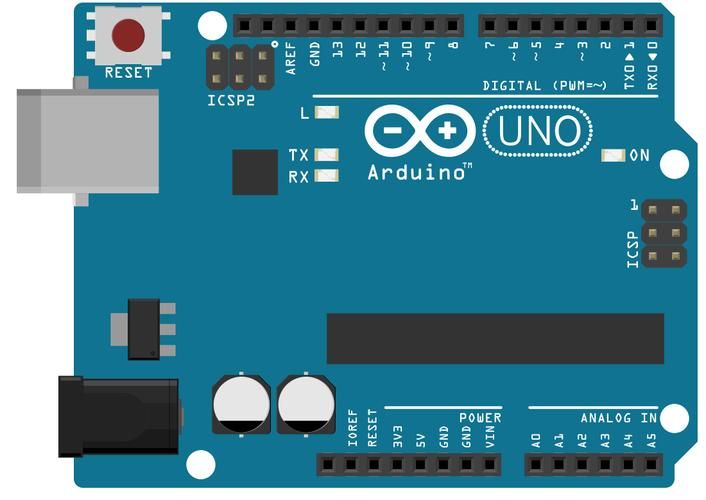
二、Arduino IDE 开发环境与硬件连接说明
（一）Arduino IDE 学习内容
Arduino IDE 是配套开发板使用的跨平台集成开发环境，支持代码编写、语法校验、程序编译与固件上传等全套功能。使用前需完成软件开发板选型、电脑串口配置，通过 USB 数据线建立开发板与计算机的通信。软件内置串口监视器，可设定对应波特率，实时查看传感器采集数据、程序运行信息，是硬件调试的核心工具。
Arduino 程序拥有固定的基础框架，包含两大核心函数：setup() 初始化函数，设备上电后仅执行一次，主要用于定义引脚工作模式、初始化串口、外设参数等；loop() 循环函数，程序会不间断循环执行该函数内代码，实现设备持续运行的功能逻辑。
在引脚使用上，数字引脚可通过 pinMode()、digitalRead()、digitalWrite() 实现输入、输出控制；模拟引脚依靠 analogRead() 读取外部模拟电压信号。同时软件支持加载官方内置库与第三方函数库，简化复杂外设的驱动代码编写工作。
（二）硬件连接规范
硬件接线遵循统一供电、共地连接的基本原则。将所有电子器件的 GND 引脚连接至同一公共地，保证整个电路电压参考基准统一，避免出现信号紊乱、数据漂移等问题；所有传感器、指示灯等外设统一使用 5V 电源供电。
电路分为模拟信号线路与数字信号线路：电位器、FSR 薄膜压力传感器等模拟类器件，接入开发板模拟引脚；LED、蜂鸣器、轻触按键等数字类器件，接入数字引脚。LED 工作时必须串联 220Ω 限流电阻，限制工作电流，防止器件因过流烧毁。
三、基础示例程序运行测试
示例用例：模拟量控制 LED 亮度（电位器 + LED）
一、硬件接线
- 电位器 中间脚 → A0
- 电位器 一端 → 5V
- 电位器 另一端 → GND
- LED 长脚 → D9
- LED 短脚 → 220Ω 电阻 → GND
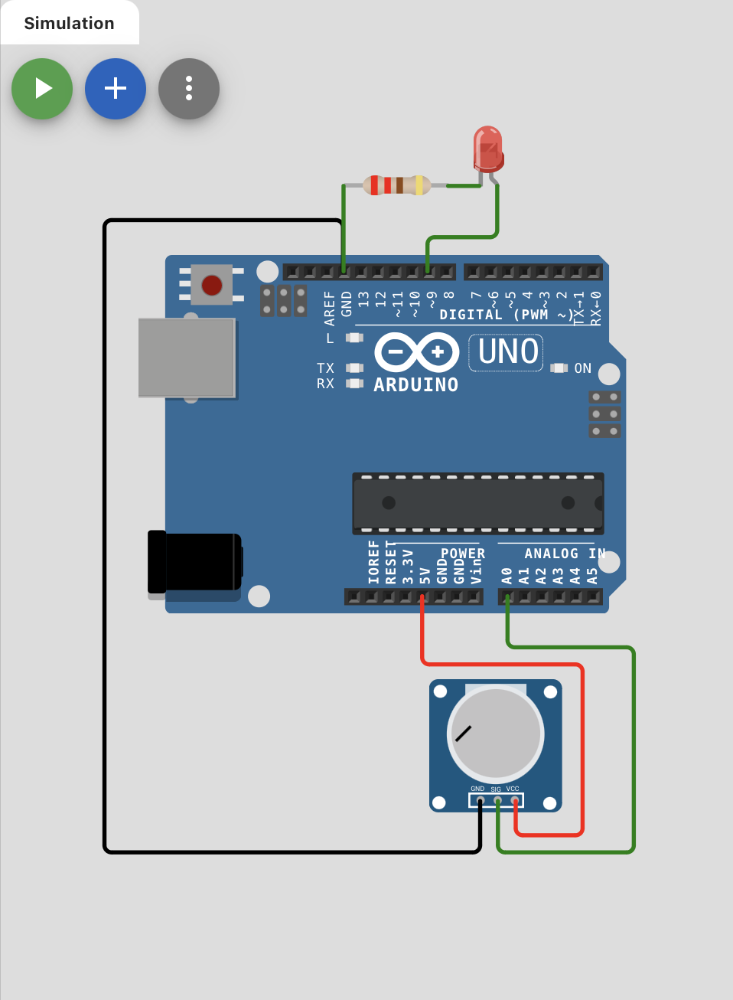
完整代码：
// 电位器控制LED亮度
void setup() {
pinMode(9, OUTPUT);
Serial.begin(9600);
}
void loop() {
int value = analogRead(A0);
analogWrite(9, value / 4);
Serial.print("电位器值：");
Serial.println(value);
delay(50);
}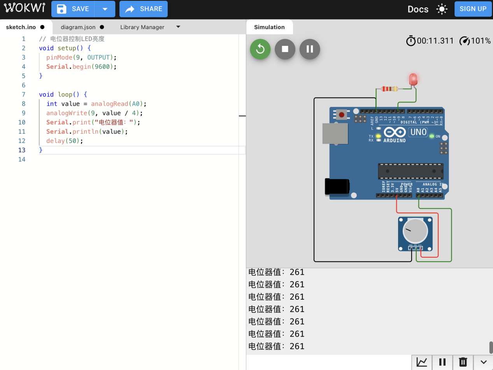
完整代码：
// 电位器控制LED亮度
void setup() {
pinMode(9, OUTPUT);
Serial.begin(9600);
}
void loop() {
int value = analogRead(A0);
analogWrite(9, value / 4);
Serial.print("电位器值：");
Serial.println(value);
delay(50);
}二、项目概述
本项目基于 Arduino 开发板，制作一套下肢动作标准度测验装置：
- 超声波传感器：检测抬腿高度；
- FSR402压力传感器：模拟采集足底压力；
- 红绿 LED：直观反馈动作是否达标；
- 逻辑：抬腿高度在 10–30 cm 且足底压力达到阈值时绿灯亮，其余情况红灯亮。
三、器材准备
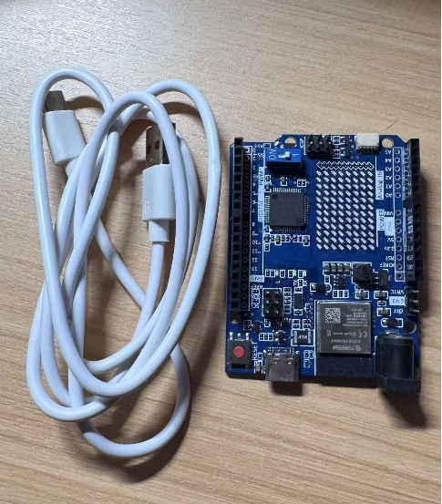
Arduino UNO 开发板 ×1及USB 数据线（用于上传程序及供电）
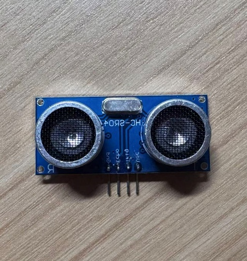
HC-SR04 超声波传感器 ×1
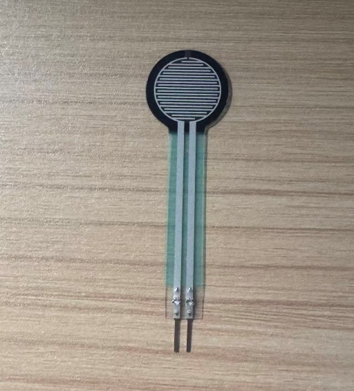
FSR402压力传感器 ×1
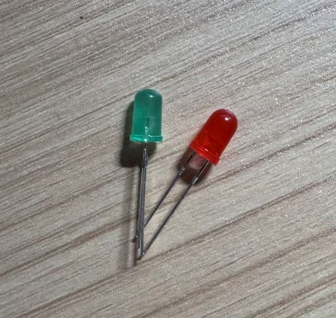
绿色 LED ×1、红色 LED ×1
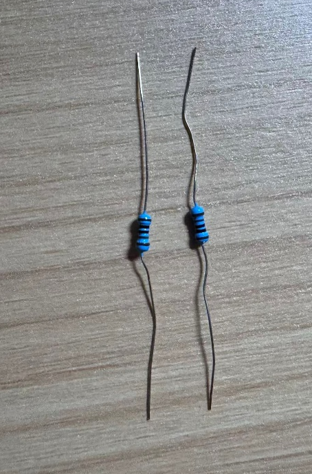
220Ω 限流电阻 ×2
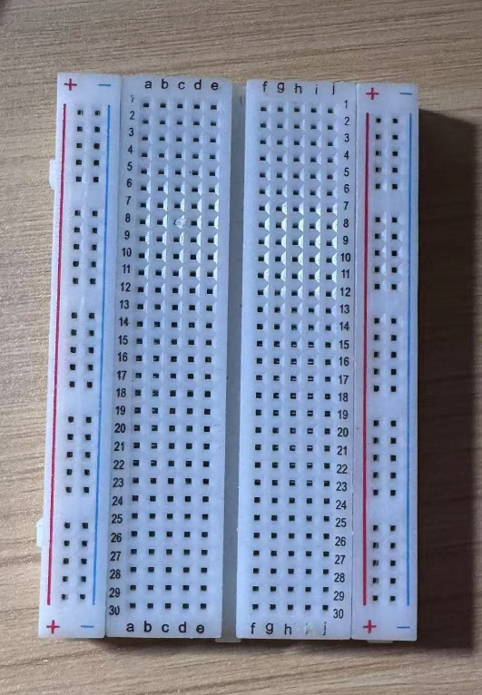
面包板、杜邦线若干
四、Wokwi 在线仿真
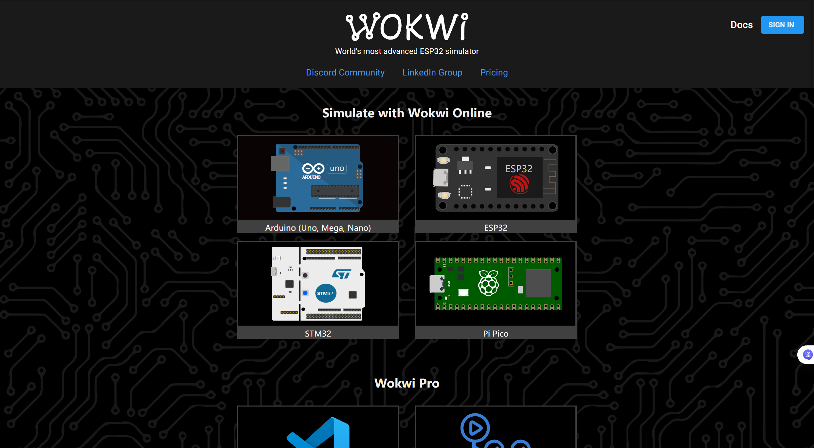
Wokwi 在线仿真主页
步骤 1：进入 Wokwi 仿真官网，新建仿真工程
- 电脑浏览器输入网址：https://wokwi.com/ ，进入 Wokwi 在线仿真主页；
- 无需注册也可临时使用，点击页面右上角 Start New Project（新建项目）；
- 在弹出的开发板列表里，选择 Arduino Uno，自动创建空白 Arduino 仿真工程，进入仿真编辑界面。
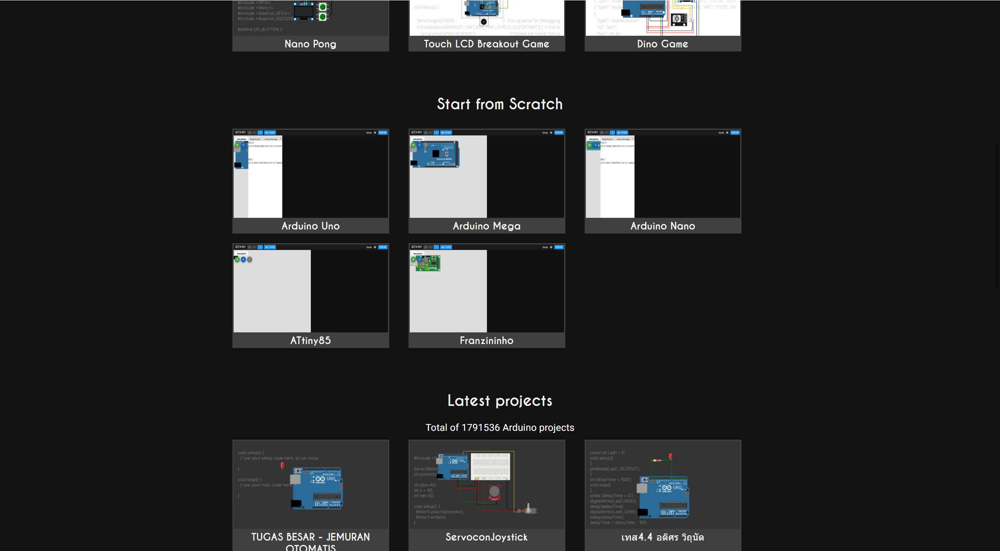
Wokwi 新建项目界面
步骤 2：在器件库添加全部所需虚拟元器件
- 界面右侧「Components（元件库）」搜索框依次搜索并添加器件：
- HC-SR04：超声波传感器；
- Potentiometer：电位器（对应FSR402压力传感器，由于Wokwi中没有这个压力传感器，进行替换，但仿真中功能完全等效）；
- LED：添加 2 个，分别用作绿灯、红灯；
- Resistor：添加 2 个电阻，阻值统一修改为 220Ω；
- 所有器件拖拽到中间仿真画布空白区域，分散摆放，预留接线空间。
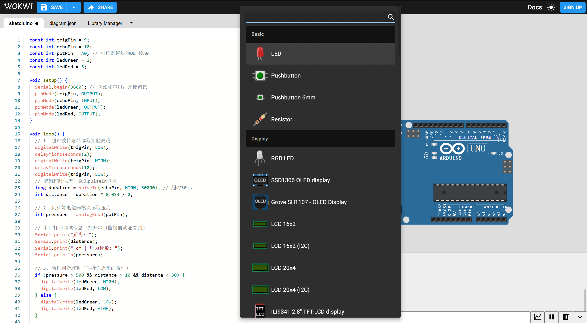
Wokwi 元件库界面
步骤 3：Wokwi 仿真电路接线（对照实物引脚一一对应）
（1）HC-SR04 超声波传感器接线
| HC-SR04 引脚 | 连接 Arduino Uno 引脚 |
|---|---|
| VCC | 5V |
| GND | GND |
| Trig | Digital 9 |
| Echo | Digital 10 |
（2）电位器（FSR402压力传感器等效仿真）接线
仿真电位器三个引脚等效模块 VCC/GND/OUT：
- 电位器一端引脚 → Arduino 5V（现实中不需要连接）；
- 电位器另一端引脚 → Arduino GND；
- 电位器中间滑动引脚 → Arduino A0（模拟信号输入）。
（3）红绿 LED 指示灯接线（串联 220Ω 电阻）
- 绿色 LED：阳极（长脚）串联 220Ω 电阻 → D2；LED 阴极 → GND；
- 红色 LED：阳极（长脚）串联 220Ω 电阻 → D3；LED 阴极 → GND。
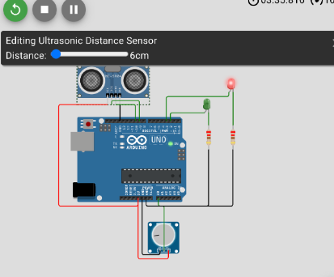
Wokwi 电路接线示意图
步骤 4：粘贴程序代码，编译校验
- 仿真界面左侧是代码编辑窗口，清空默认自带示例代码；
- 将完整调试后的程序完整粘贴进代码框内：
const int trigPin = 9;
const int echoPin = 10;
const int fsrPin = A0;
const int ledGreen = 2;
const int ledRed = 3;
// 压力阈值调整：空载100-300，用力按压才低于50
const int pressureThreshold = 50;
void setup() {
Serial.begin(9600);
pinMode(trigPin, OUTPUT);
pinMode(echoPin, INPUT);
pinMode(ledGreen, OUTPUT);
pinMode(ledRed, OUTPUT);
// 开启A0内部上拉，无外接分压电阻
pinMode(fsrPin, INPUT_PULLUP);
}
void loop() {
// 超声波测距
digitalWrite(trigPin, LOW);
delayMicroseconds(2);
digitalWrite(trigPin, HIGH);
delayMicroseconds(10);
digitalWrite(trigPin, LOW);
long duration = pulseIn(echoPin, HIGH, 30000);
int distance = duration * 0.034 / 2;
// 读取FSR压力值
int pressure = analogRead(fsrPin);
// 串口打印方便观察数值
Serial.print("距离:");
Serial.print(distance);
Serial.print(" cm | FSR读数:");
Serial.println(pressure);
// 双重条件必须同时满足：
// 1. FSR读数 < 50：手指/脚用力按压（压力充足）
// 2. 10cm < 距离 < 30cm：抬腿高度标准
if (pressure < pressureThreshold && distance > 10 && distance < 30) {
digitalWrite(ledGreen, HIGH);
digitalWrite(ledRed, LOW);
} else {
digitalWrite(ledGreen, LOW);
digitalWrite(ledRed, HIGH);
}
delay(50);
}- 点击代码编辑区上方 Verify（编译校验）按钮，提示无报错，代码编译通过。
步骤 5：启动仿真运行，逐项功能测试
- 点击仿真画布上方绿色播放▶按钮，启动在线仿真；
- 打开界面侧边 Serial Monitor（串口监视器），波特率设置 9600，实时查看距离、压力数值；
测试场景 1：动作达标测试
- 拖动电位器滑块，将模拟压力读数调至 < 50；
- 拖动 HC-SR04 前方虚拟遮挡物，把测距距离调整在 10~30cm 区间；
- 观测现象：绿色 LED 点亮，红色 LED 熄灭，串口同步打印两组有效达标数值。
测试场景 2：抬腿高度不达标（距离＜10cm）
保持压力读数 < 50，将遮挡物贴近超声波传感器，距离小于 10cm；
观测现象：红灯常亮、绿灯熄灭，判定动作不标准。
测试场景 3：抬腿过高（距离＞30cm）
保持压力读数 < 50，遮挡物远离传感器，距离超过 30cm；
观测现象：红灯常亮、绿灯熄灭。
测试场景 4：足底压力不足（压力读数≥ 50）
距离固定在 10~30cm，反向拖动电位器，压力数值升到 50 以上；
观测现象：红灯常亮、绿灯熄灭。
步骤 6：仿真结果确认与导出工程
- 全部 4 组测试场景逻辑均符合设计预期，仿真无接线错误、代码逻辑漏洞；
- （可选）点击工程分享按钮，复制 Wokwi 仿真链接，可粘贴进报告存档；仿真验证完成，可转入实物硬件焊接、接线实操环节。
五、硬件电路搭建（分步接线）
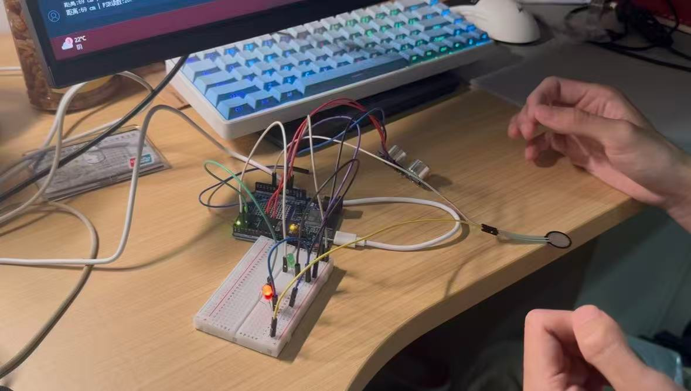
硬件电路搭建示意图
步骤 1：搭建公共电源与地
- 将 Arduino 的 5V 接到面包板正极轨；
- 将 Arduino 的 GND 接到面包板负极轨。
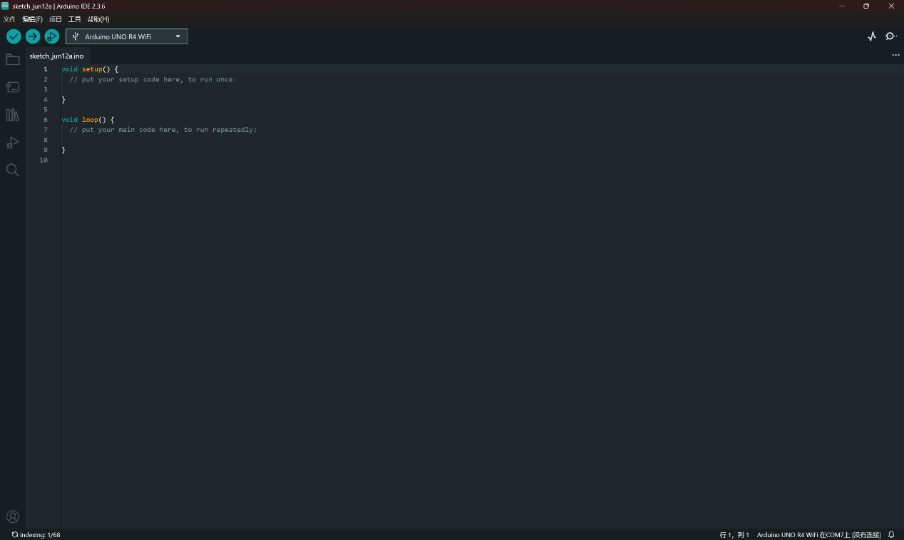
将 Arduino 的 GND 接到面包板负极
步骤 2：连接超声波传感器（测抬腿高度）
- VCC → 面包板 5V
- GND → 面包板 GND
- Trig → Arduino D9
- Echo → Arduino D10
步骤 3：连接FSR402压力传感器（足底压力）
- FSR402 一端 → A0
- FSR402 另一端 → GND
说明：该模块内部已做好分压与滤波，直接输出 0–5V 模拟量，可由 analogRead() 直接读取。
步骤 4：连接红绿 LED（动作反馈）
-
绿色 LED：
- 长脚（阳极）→ 220Ω 电阻 → Arduino D2
- 短脚（阴极）→ 面包板 GND
-
红色 LED：
- 长脚（阳极）→ 220Ω 电阻 → Arduino D3
- 短脚（阴极）→ 面包板 GND
步骤 5：整体检查
- 所有 GND 共地，无悬空；
- 传感器与电位器供电均为 5V；
- LED 串联 220Ω 电阻，防止烧毁。
六、软件开发（程序编写与上传）
步骤 1：开发环境准备
- 打开 Arduino IDE；
- 选择开发板：工具 → 开发板 → Arduino Uno；
- 用 USB 线连接 Arduino 与电脑。
- 选择端口：
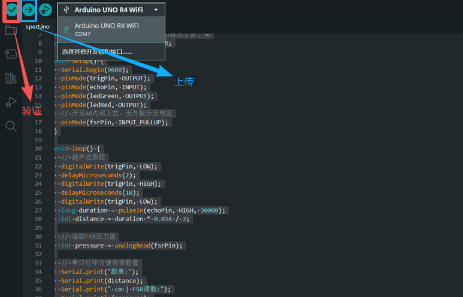
Arduino IDE 端口选择界面
步骤 2：复制相同程序代码（适配电位器模块最终版）
将 Wokwi 仿真中已验证的代码复制到 Arduino IDE 中。
步骤 3：验证与上传
- 点击「验证 / 编译」，确保无报错；
- 点击「上传」，等待提示 "上传成功"。
七、系统调试与功能测试
步骤 1：串口监视器调试
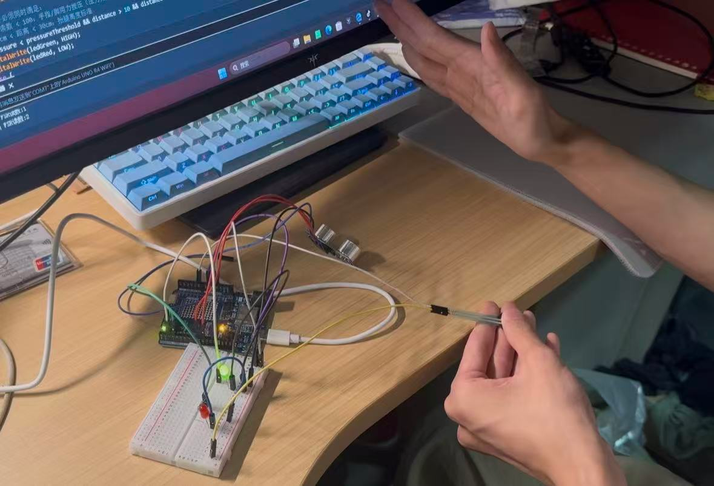
串口监视器调试界面
- 打开串口监视器，波特率设为 9600；
- 按压FSR402传感器：压力读数连续变化；
- 手在超声波前移动：距离读数应随距离变化（单位 cm）。
步骤 2：阈值校准（适配电位器）
- 无压力时：压力读数在100-200间；
- 有压力（模拟足底受压）：读数下降；
- 本项目阈值设为 50：压力 < 50 视为 "压力达标"。
步骤 3：动作模拟测试
- 条件一：抬腿高度 10–30 cm；
- 条件二：足底压力 < 50；
- 同时满足：绿灯亮、红灯灭（动作标准）；
- 任一不满足：红灯亮、绿灯灭（动作不标准）。
八、问题排查与优化（你遇到红灯常亮的解决过程）
- 现象：无论怎么做，红灯一直亮、绿灯不亮；
-
排查：
- 串口观察：压力读数始终 > 50；
- 原因：接线导致一直输出高电平；
-
解决：
- 确认模块FSR压力传感器双引脚接线无误；
- 按压FSR压力传感器，使压力读数能降到 <50；
- 必要时将判断阈值由 50 上调至 100。
九、项目小结
本项目成功使用 Arduino、超声波传感器、贝科姆旋转电位器模块与红绿 LED，实现了对下肢抬腿高度与足底压力的综合检测与灯光反馈。通过硬件规范接线、软件逻辑编写与串口调试校准，系统能够稳定判断动作是否标准，达到了设计目标。
十、演示视频
Arduino and Touchpad Tic Tac Toe
网站参考：https://www.instructables.com/Arduino-and-Touchpad-Tic-Tac-Toe/
This is an implementation of a tic tac toe game using a 3x3 array of bicoloured LEDs for a display, a simple resistive touchpad, and an Arduino to tie everything together.
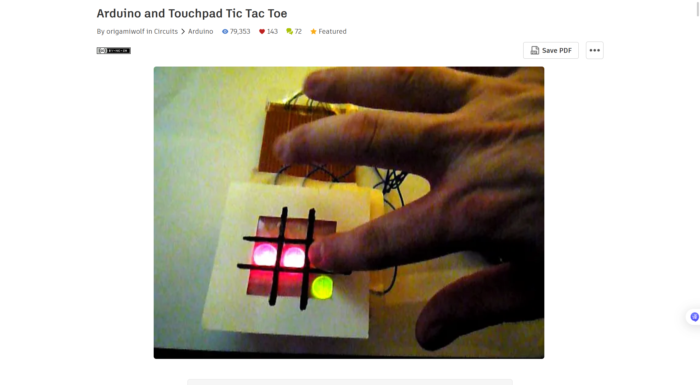
图片23
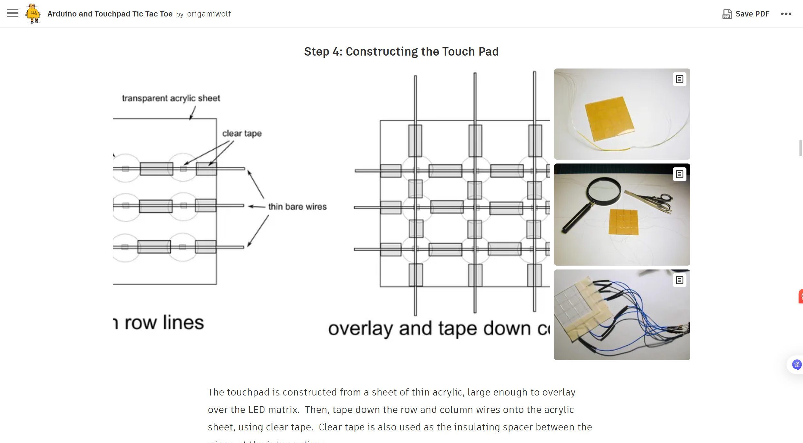
图片24
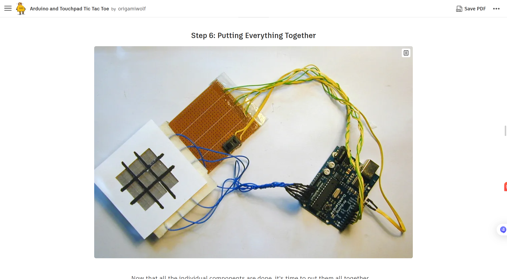
图片25